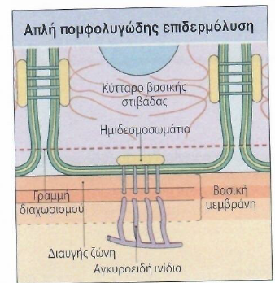
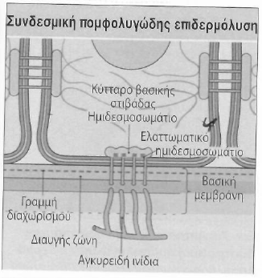
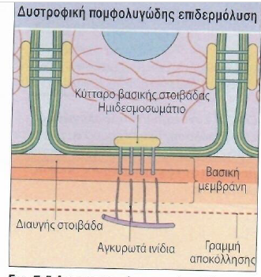
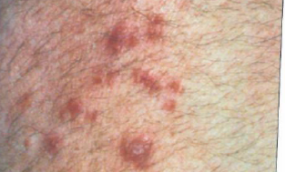
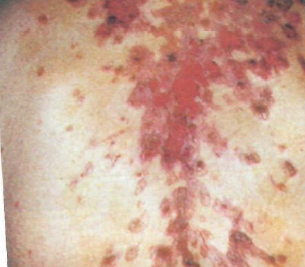
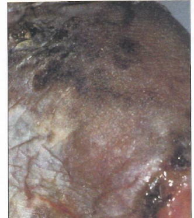

Πομφολυγώδη νοσήματα
Αναλυτικές σημειώσεις σε μορφή HTML, στα ελληνικά, για ενσωμάτωση σε εφαρμογή/ιστοσελίδα. Το κεφάλαιο οργανώθηκε σε λογικές ενότητες, με έμφαση στη διάκριση ανάμεσα στο επίπεδο αποκόλλησης, στο αν το νόσημα είναι κληρονομικό ή ανοσολογικό, στην κλινική εικόνα, και στις βασικές αρχές διάγνωσης και θεραπείας.
Τι είναι τα πομφολυγώδη νοσήματα
Πρόκειται για ομάδα νοσημάτων στα οποία εμφανίζονται πομφόλυγες, φυσαλίδες, διαβρώσεις ή αποκόλληση του δέρματος/βλεννογόνων.- Η βλάβη μπορεί να είναι ενδοεπιδερμική, υποεπιδερμική ή στη ζώνη της βασικής μεμβράνης.
- Το επίπεδο αποκόλλησης είναι κεντρικό για τη διάγνωση.
- Κλινικά δεν αρκεί μόνο η εικόνα· πολλές μορφές μοιάζουν μεταξύ τους.
- Η τελική διάγνωση συχνά απαιτεί βιοψία, ιστολογία και ανοσοφθορισμό.
Κύριες κατηγορίες αιτιών φυσαλιδοποίησης
- 1. Συγγενείς/κληρονομικές: πομφολυγώδης επιδερμόλυση, ακράτεια μελανίνης, όψιμη δερματική πορφυρία, καλοήθης οικογενής πέμφιγα (Hailey-Haiey).
- 2. Επίκτητες :
- Επίκτητες από τραύμα: θερμικά, χημικά, εκ τριβής, από ακτινοβολία.
- Λοιμώξεις: σταφυλοκοκκικές, ιογενείς, μυκητιασικές.
- Δευτεροπαθείς σε φλεγμονή: έκζεμα/δερματίτιδα, πολύμορφο ερύθημα, τοξική επιδερμική νεκρόλυση, λειχηνοειδείς αντιδράσεις, φαρμακευτικές αντιδράσεις.
- Ανοσολογικά: πομφολυγώδες πεμφιγοειδές, ουλωτικό πεμφιγοειδές, έρπης των εγκύων, πέμφιγα, ερπητοειδής δερματίτιδα, γραμμική IgA πέμφιγα, επίκτητη πομφολυγώδης επιδερμόλυση.
- Μεταβολικα,Αγνωστα:Οψιμη δερμτατική πορφυρία, νεφρικη ανεπάρκεια, Σακαχρωδης διαβητης
1.A Πομφολυγώδης επιδερμόλυση (κληρονομική ομάδα)
Ο όρος χρησιμοποιείται για γενετικά καθορισμένα νοσήματα που οφείλονται σε ελαττώματα των δομών που εξασφαλίζουν την προσκόλληση επιδερμίδας και χορίου. Η ουσία είναι ότι το δέρμα γίνεται εξαιρετικά ευάλωτο σε μηχανική καταπόνηση.
Βασικές μορφές
- Απλή πομφολυγώδης επιδερμόλυση: η αποκόλληση γίνεται μέσα στα βασικά κύτταρα της επιδερμίδας. Συνήθως βαρύτερη μηχανική ευθραυστότητα, αλλά χωρίς ουλές όπως στις βαθύτερες μορφές. Οι περισσότερες μορφές κληρονομούνται με αυτοσωματικό επικρατούντα χαρακτήρα.
- Γενικευμένη Απλή Πομφολυγώδης Επιδερμόλυση Φυσαλίδες σε σημεία τριβής από τη βρεφική ηλικία. Κυρίως σε χέρια–πόδια, συνεχίζεται και στην ενήλικη ζωή.Επουλώνονται χωρίς ουλές∙ βαρύτητα ποικίλλει.Κληρονομείται αυτοσωματικά επικρατούν.
- Πομφολυγώδης Επιδερμόλυση των Χεριών και Ποδιών (Weber–Cockayne)Η πιο ήπια και συχνή μορφή.Φυσαλίδες μόνο σε παλάμες και πέλματα.Εμφανίζονται με βάδιση, ζέστη, εφίδρωση.Ήπια πορεία, χωρίς συστηματικά προβλήματα.
- Ερπητοειδής Απλή Πομφολυγώδης Επιδερμόλυση (Dowling–Meara)Η πιο σοβαρή μορφή της απλής ΠΕ (αλλά σπάνια).Εκτεταμένες φυσαλίδες, μπορεί να επηρεάζουν στόμα/βλεννογόνους.Μοιάζει κλινικά με πιο βαριές μορφές επιδερμόλυσης.Βελτιώνεται με τα χρόνια αλλά παραμένει σε χέρια–πόδια, με εξάρσεις τύπου “ερπητικών” ομάδων
- Συνδεσμική (junctional): το σημείο αποκόλλησης εντοπίζεται στη διαυγή ζώνη της βασικής μεμβράνης. Συχνά σοβαρότερη. Εμφανίζεται από τη νεογνική ηλικία και μπορεί να είναι εκτεταμένη, επηρεάζοντας και στόμα/φάρυγγα.Οι βλάβες επουλώνονται αργά, με συχνές ουλές.Η υγεία επιδεινώνεται λόγω απώλειας της ακεραιότητας του δέρματος → υψηλός κίνδυνος λοιμώξεων. Η μορφή Herlitz είναι η πιο βαριά και συχνά θανατηφόρα στη βρεφική ηλικία.
- Δυστροφική: η αποκόλληση είναι κάτω από τη βασική μεμβράνη. Τυπικά σχετίζεται με ουλές, κρίκια και σοβαρές παραμορφώσεις.Προκαλείται από μετάλλαξη στο γονίδιο COL7A1 (κολλαγόνο τύπου VII → αγκυρετικές ίνες).
Δύο μορφές: Αυτοσωματική υπολειπόμενη = πολύ σοβαρή. Αυτοσωματική επικρατούσα = ηπιότερη
- Σοβαρές μορφές κάνουν:Συμφύσεις (“γάντια”) στα δάκτυλα → παραμορφώσεις. Στένωση οισοφάγου/στόματος → δυσφαγία, δυσκολία στη σίτιση.Οφθαλμική ουλοποίηση → κίνδυνος τύφλωσης.
- Χρόνια φλεγμονή και επίμονη φυσαλιδωση.
- Αυξημένος κίνδυνος για ακανθοκυτταρικό καρκίνωμα στις ουλώδεις περιοχές.
↥ Back to top



1.Β Διερεύνησης & Θεραπείας
- Διερεύνησης :
- διάγνωση βασίζεται κυρίως στην κλινική εικόνα και στην ηλικία έναρξης, τη σοβαρότητα, την έκταση και την κατανομή των βλαβών.
- βιοψία δέρματος με ανοσοφθορισμό ή ηλεκτρονική μικροσκοπία, ώστε να εντοπιστεί το επίπεδο διαχωρισμού στο δέρμα.
- Βοηθητική επίσης η γενετική εξέταση, η οποία κατατάσσει τη νόσο στους συγκεκριμένους υποτύπους..
- Θεραπείας : Υπάρχουν 4 άξονες αντιμετώπισης:
- Γενικά μέτρα Προσεκτική φροντίδα του δέρματος.Αποφυγή τριβής/τραυματισμών.Προσοχή στη διατροφή,ενυδάτωση και θερμοκρασία.
- Ειδικά μέτρα αντιμικροβιακά, ειδικοί επίδεσμοι, αναλγησία.Αντιμετώπιση λοιμώξεων, επιπλοκών και χρόνιων πληγών..
- Γενετική καθοδήγηση Συζητείται ο κίνδυνος για μελλοντικά παιδιά και δυνατότητες προγεννητικού ελέγχου.
- Συμβουλευτική & υποστήριξη ψυχολογική και πρακτική υποστήριξη.Εκπαίδευση σε καθημερινή φροντίδα και πρόληψη επιπλοκών..
1.C Καλοήθης οικογενής πέμφιγα (Hailey-Hailey)
- Σπάνια γενετικά καθορισμένη δερματοπάθεια.
- Χαρακτηρίζεται από υποτροπιάζουσα φυσαλιδοποίηση και διαβρώσεις, κυρίως σε καμπτικές επιφάνειες.
- Συνδέεται με μετάλλαξη γονιδίου που επηρεάζει αντλία ασβεστίου.
- Μπορεί κλινικά να μοιάζει με άλλες διαβρωτικές βλάβες των πτυχών, αλλά δεν είναι αυτοάνοση πέμφιγα.
2. Επίκτητες μη ανοσολογικές πομφολυγώδεις καταστάσεις
2.A Φυσικά αίτια φυσαλίδωσης
- Θερμικές κακώσεις:Εγκαύματα από ζεστό ή κρύο προκαλούν κυτταρικό θάνατο των κερατινοκυττάρων → φυσαλίδες.
- Χημικές ουσίες: Ερεθιστικές/καυστικές ουσίες (οξέα, αλκάλια, πετρελαϊκά παράγωγα) μπορούν να προκαλέσουν κυτταρικό θάνατο και αποκόλληση δέρματος → φυσαλίδες.
- Υπεριώδης ακτινοβολία (ηλιακό έγκαυμα): Έντονη UV έκθεση προκαλεί φλεγμονώδες οίδημα και νέκρωση επιδερμίδας → φυσαλίδες.
- Μηχανική καταπόνηση σε προδιατεθειμένα άτομα: Άτομα με εύθραυστο δέρμα μπορεί να κάνουν φυσαλίδες ακόμα και με ήπια πίεση.
2.B Λοιμώξεις
- Σταφυλοκοκκικές λοιμώξεις: μπορούν να προκαλέσουν εύθραυστες πομφόλυγες και επιφανειακή αποκόλληση.
- Ιογενείς: έρπης, ανεμευλογιά-ζωστήρας και άλλα εξανθήματα με φυσαλίδες.
- Μυκητιασικές: λιγότερο συχνά, αλλά δυνατόν να δημιουργούν πομφολυγώδη εικόνα.
2.C Δευτεροπαθείς σε φλεγμονή
Ισχυρή φλεγμονή του δέρματος μπορεί να οδηγήσει σε φυσαλίδες, ανεξάρτητα από την αρχική αιτία (συχνό σε εκζέματα, ιδιαίτερα σε πόδια/χέρια).
Μπορεί να εμφανίζονται μεγάλες τεταμένες φυσαλίδες σε σημεία με έντονη φλεγμονή ή όπου έχει προηγηθεί νύγμα εντόμου.
- Σύνδρομο Stevens–Johnsonκτεταμένη νέκρωση επιδερμίδας με σοβαρές φυσαλίδες.
- Πολύμορφο ερύθημα και οι βαριές μορφές του. έντονη φλεγμονή οδηγεί σε επιδερμικό κυτταρικό θάνατο → φυσαλίδες/πομφόλυγες
- Τοξική επιδερμική νεκρόλυση (TEN καταστροφή πλήρους πάχους επιδερμίδας, βαριά και συχνά θανατηφόρα.
- Λευκοκυτταρές πητυρίαση μπορεί να κάνει μικρές φυσαλίδες.
- Πομφολυγώδεις φαρμακευτικές αντιδράσεις φάρμακα μπορούν να προκαλέσουν επιδερμικό διαχωρισμό και φυσαλίδες.
Εξεταστικά, η ιδέα είναι ότι δεν είναι κάθε πομφόλυγα αυτοάνοση. Πρέπει πάντα να σκεφτόμαστε λοίμωξη, φάρμακο, φλεγμονώδες εξάνθημα ή τοξική βλάβη.
2.D Ανοσοπροκαλούμενες πομφολυγώδεις διαταραχές: γενική λογική
- Είναι από τις σημαντικότερες αιτίες πομφολύγων.
- Οι περισσότερες οφείλονται σε αυτοαντισώματα έναντι δομών προσκόλλησης του δέρματος ή της βασικής μεμβράνης.
- Στην πράξη, χωρίζονται σε:
- Πεμφιγοειδή → κυρίως υποεπιδερμική αποκόλληση
- Πέμφιγα → κυρίως ενδοεπιδερμική αποκόλληση με ακανθόλυση
- Για τη σωστή διάκριση χρειάζονται κλινική εικόνα + ιστολογία + άμεσος ανοσοφθορισμός ± έμμεσος ανοσοφθορισμός/ορολογία.
2.E ΠΕΜΦΙΓΟΕΙΔΗ
Πομφολυγώδες πεμφιγοειδές
- Η συχνότερη από τις αυτοάνοσες πομφολυγώδεις διαταραχές.
- Η αποκόλληση είναι υποεπιδερμική.
- Συνήθως εμφανίζεται σε ηλικιωμένους, αλλά μπορεί να εμφανιστεί και νεότερα.
- Κλασική εικόνα: τεταμένες πομφόλυγες σε ερυθηματώδη ή φυσιολογική βάση, συχνά με έντονο κνησμό.
- Μπορεί να υπάρχουν αιμορραγικές βλάβες και δακτυλιοειδείς/εκζεματοειδείς πρόδρομες βλάβες.
Ουλωτικό πεμφιγοειδές
- Κυρίως νόσος των βλεννογόνων και της οφθαλμικής επιφάνειας.
- Μπορεί να προκαλέσει ουλοποίηση, συμφύσεις και λειτουργικές βλάβες.
- Ιδιαίτερα σημαντική η οφθαλμολογική εκτίμηση, γιατί ο κίνδυνος για μόνιμη βλάβη είναι σοβαρός.
- Μπορεί να συμμετέχει και το τριχωτό της κεφαλής με ουλωτική αλωπεκία.
Έρπης των εγκύων (pemphigoid gestationis)
- Πρόκειται για πομφολυγώδες εξάνθημα σχετιζόμενο με την κύηση.
- Ιστολογικά μοιάζει με πομφολυγώδες πεμφιγοειδές.
- Συχνά εμφανίζεται στο 2ο ή 3ο τρίμηνο ή γύρω από τον τοκετό.



2.F Ερπητοειδής δερματίτιδα
- Χαρακτηρίζεται περισσότερο από έντονο κνησμό και ομαδοποιημένες βλάβες παρά από μεγάλες πομφόλυγες.
- Συχνές εντοπίσεις: αγκώνες, αντιβράχια, γόνατα, κνήμες, γλουτοί.
- Συνδέεται στενά με ευαισθησία στη γλουτένη και εντεροπάθεια.
- Ανταποκρίνεται στη δαψόνη και απαιτεί συχνά και διατροφική αντιμετώπιση.
2.G Γραμμική IgA πέμφιγα / χρόνια πομφολυγώδης δερματοπάθεια παιδικής ηλικίας
- Υποεπιδερμική φυσαλιδοποίηση με γραμμική εναπόθεση IgA στη βασική μεμβράνη.
- Σε παιδιά μιλάμε συχνά για χρόνια πομφολυγώδη δερματοπάθεια της παιδικής ηλικίας.
- Μπορεί να δώσει περιφερικά δακτυλιοειδή ή «κορδονωτή» διάταξη βλαβών.
- Συχνά ανταποκρίνεται πολύ καλά στη δαψόνη.
2.H ΠΕΜΦΙΓΑ
Η πέμφιγα είναι επίκτητη αυτοάνοση νόσος με αντισώματα έναντι στοιχείων της ενδοκυττάριας συγκόλλησης των κερατινοκυττάρων. Αυτό προκαλεί ακανθόλυση, δηλαδή απώλεια συνοχής μεταξύ των επιδερμικών κυττάρων.
- Οι πομφόλυγες είναι συνήθως χαλαρές και σπάζουν εύκολα.
- Έτσι, αντί να βλέπουμε πάντα ολόκληρη πομφόλυγα, συχνά βλέπουμε διαβρώσεις.
- Η συμμετοχή των βλεννογόνων, ιδιαίτερα του στόματος, είναι πολύ συχνή στην κοινή πέμφιγα.
- Η θεραπεία στηρίζεται στην ανοσοκαταστολή.
Κοινή πέμφιγα (pemphigus vulgaris)
|
Βλαστική πέμφιγα
|
Φυλλώδης πέμφιγα
|
Ερυθηματώδης πέμφιγα
|
Τα παθολογικά ευρήματα στην πέμφιγα
| Κοινή | Βλαστική | Φυλλώδης | Ερυθηματώδης | |
|---|---|---|---|---|
| Επίπεδο επιδερμικού διαχωρισμού | Πάνω από τη βασική στιβάδα | Πάνω από τη βασική στιβάδα | Ψηλά* | Ψηλά* |
| Ακανθόλυση | +ve | +ve | +ve | +ve |
| Άμεσος ανοσοφθορισμός | +ve | +ve | +ve** | +ve** |
| Έμμεσος ανοσοφθορισμός | +ve | +ve | -ve | +ve |
| Ορολογικά ευρήματα EL | -ve | -ve | -ve | +ve |
* Μέσα στην κοκκώδη στιβάδα ή υποκεράτεια
** Ο τίτλος του έμμεσου ανοσοφθορισμού συνδέεται με κάποιο βαθμό με τη βαρύτητα της νόσου
Τι να θυμάσαι συνοπτικά
- Πέμφιγα = ενδοεπιδερμική βλάβη + ακανθόλυση + χαλαρές πομφόλυγες + διαβρώσεις.
- Κοινή πέμφιγα = συχνή στοματική συμμετοχή.
- Φυλλώδης πέμφιγα = πιο επιφανειακή, συνήθως χωρίς βλεννογόνους.



2.I Επίκτητη πομφολυγώδης επιδερμόλυση (ΕΠΕ)
- Αυτοάνοση πομφολυγώδης διαταραχή που μπορεί κλινικά να θυμίζει πομφολυγώδες πεμφιγοειδές ή γραμμική IgA νόσο.
- Σχετίζεται με βλάβη σε δομές της βασικής μεμβράνης και δίνει υποεπιδερμική αποκόλληση.
- Μπορεί να παρουσιάζει πομφόλυγες, ευθραυστότητα, διαβρώσεις και σε ορισμένες μορφές ουλοποίηση.
- Συχνά είναι ανθεκτική στις συνήθεις θεραπείες.
Συγγενείς/συγγενείς μεμονωμένες καταστάσεις που πρέπει να γνωρίζεις ακόμη
- Πομφολυγώδης συστηματικός ερυθηματώδης λύκος: σπάνια πομφολυγώδης εκδήλωση σε ασθενείς με ΣΕΛ.
- Πεμφιγοειδής ομαλός λειχήνας: φλεγμονώδης νόσος με χαρακτηριστικά λειχήνα και επαγόμενη πομφολυγώδη εικόνα.
2.J Μεταβολικές, Ετεροκλητες και Κατακτηθείσες Αιτίες Φυσαλιδώσεων
Όψιμη δερματική πορφυρία
- Προκαλεί μικρές φυσαλίδες που επουλώνονται με ουλές και κεχρία..
- Εμφανίζεται κυρίως σε εκτεθειμένες περιοχές (χέρια, πρόσωπο) και σε σημεία που τραυματίζονται.
- Οφείλεται σε γενετική ανωμαλία στη διάσπαση του ουροπορφυρινογόνου.
- Επιβαρύνεται από: ηπατική νόσο,αλκοόλ,οιστρογόνα,μεγάλη εναπόθεση σιδήρου (αιμοχρωμάτωση)
Πομφόλυγες στη νεφρική ανεπάρκεια
- Ασθενείς σε αιμοκάθαρση ή με υψηλές δόσεις φουροσεμίδης μπορεί να εμφανίσουν μεγάλες πομφόλυγες.
Η αιτία είναι άγνωστη.
Υποκεράτεια αμικροβιακή φλυκταινώδης δερματοπάθεια (Νόσος Sneddon–Wilkinson)
- Σπάνια δερματοπάθεια.Χαρακτηρίζεται περισσότερο από φλύκταινες παρά από πομφόλυγες.
- Συνήθως μέσης ηλικίας γυναίκες..
- Οι βλάβες είναι χαλαρές φλύκταινες σε πτυχές και κορμό που μπορεί να συγχωνεύονται.
- Η διάγνωση βοηθάται από την ηωσινοφιλία και την βιοψία.Η νόσος ανταποκρίνεται καλά στη δαψόνη
Σακχαρωδης διαβήτης
- Μιρκή μειονοτητα ασθενών
Διαφορική διάγνωση – πώς να το σκεφτείς σε ερώτηση εξετάσεων
- Τεταμένη πομφόλυγα → σκέψου κυρίως υποεπιδερμική νόσο: πεμφιγοειδές, γραμμική IgA, ΕΠΕ.
- Χαλαρή πομφόλυγα που ρήγνυται εύκολα → σκέψου πέμφιγα.
- Έντονος κνησμός + συμμετρικές βλάβες εκτατικών επιφανειών → σκέψου ερπητοειδή δερματίτιδα.
- Οφθαλμική/βλεννογονική ουλοποίηση → σκέψου ουλωτικό πεμφιγοειδές.
- Παιδί με χρόνια/υποτροπιάζουσα υποεπιδερμική φυσαλιδοποίηση → σκέψου γραμμική IgA / χρόνια πομφολυγώδη δερματοπάθεια παιδικής ηλικίας.
- Μηχανικά επαγόμενες πομφόλυγες από βρεφική ηλικία → σκέψου κληρονομική πομφολυγώδη επιδερμόλυση.
Διάγνωση
- Κλινική εικόνα: μορφή πομφόλυγας, εντόπιση, βλεννογόνοι, κνησμός, ουλές.
- Βιοψία για ιστολογία: δείχνει το επίπεδο αποκόλλησης και αν υπάρχει ακανθόλυση.
- Άμεσος ανοσοφθορισμός: βασικό εργαλείο για επιβεβαίωση αυτοάνοσης νόσου.
- Έμμεσος ανοσοφθορισμός / ορολογία: βοηθούν στον καθορισμό των στοχευόμενων αντιγόνων.
Θεραπευτικές αρχές
- Πεμφιγοειδή και πέμφιγα: η θεραπεία στηρίζεται κυρίως στην ανοσοκαταστολή.
- Χρησιμοποιούνται συστηματικά κορτικοστεροειδή, ενώ συχνά προστίθενται ανοσοκατασταλτικοί παράγοντες για μείωση της απαιτούμενης δόσης.
- Σε ειδικές καταστάσεις:
- δαψόνη σε ερπητοειδή δερματίτιδα και συχνά σε γραμμική IgA
- αντιμετώπιση επιμολύνσεων, διατροφική/υγροηλεκτρολυτική υποστήριξη όπου χρειάζεται
- οφθαλμολογική παρακολούθηση στο ουλωτικό πεμφιγοειδές
- Σε εκτεταμένες διαβρώσεις σημαντική είναι και η τοπική περιποίηση του δέρματος και των βλεννογόνων.
Πολύ γρήγορη επανάληψη
- Πεμφίγα → ενδοεπιδερμική, ακανθόλυση, χαλαρές πομφόλυγες, συχνά στόμα.
- Πομφολυγώδες πεμφιγοειδές → υποεπιδερμική, τεταμένες πομφόλυγες, ηλικιωμένοι, κνησμός.
- Ουλωτικό πεμφιγοειδές → βλεννογόνοι/οφθαλμοί, ουλές.
- Ερπητοειδής δερματίτιδα → έντονος κνησμός, εκτατικές επιφάνειες, σχέση με γλουτένη.
- Γραμμική IgA → υποεπιδερμική, IgA στη βασική μεμβράνη, δαψόνη.
- Κληρονομική πομφολυγώδης επιδερμόλυση → γενετική, μηχανική ευθραυστότητα από μικρή ηλικία.
Ο πρακτικός άξονας που πρέπει να θυμάσαι
- σκέψου κυρίως πέμφιγα
- συνήθως πιο χαλαρές πομφόλυγες
- εύκολη ρήξη → διαβρώσεις
- συχνή συμμετοχή στοματικού βλεννογόνου
- σκέψου κυρίως πεμφιγοειδή, γραμμική IgA, ερπητοειδή δερματίτιδα, ΕΠΕ
- συνήθως πιο τεταμένες πομφόλυγες
- λιγότερο εύθραυστες
- βοηθούν ανοσοφθορισμός και ορολογία